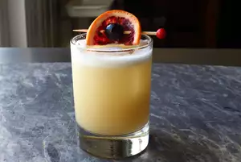

Whiskey Sour

Description
Day drinking is the best drinking, and if that day happens to be a very sunny, hot day, there's no better cocktail to enjoy than a classic whiskey sour. I'm very excited to show you my favorite formula for this incredibly refreshing, super simple, absolutely delicious drink. Garnish with a slice of blood orange and a Luxardo cherry.
Ingredients
- ½ cup white sugar
- ¼ cup water
- 2 fluid ounces 100-proof bourbon whiskey
- 1 fluid ounce freshly squeezed lemon juice
- 4 drops orange bitters, or more to taste
- 1 large egg white
- ice cubes as needed
Directions
- Bring sugar and water to a simmer in a small pan over medium heat, stirring occasionally, until sugar is dissolved. Turn off heat, transfer to a bowl, and let syrup cool completely before using, 15 to 20 minutes
- Pour 3/4 fluid ounce simple syrup, bourbon, lemon juice, bitters, and egg white into a large cocktail shaker. Cover with a smaller cocktail shaker, or top, and give the cocktail a u0022dry shakeu0022 without ice, about 30 seconds.
- Add 3 ice cubes to the mixture, cover, and shake vigorously until the shaker is very cold and the outside is frosty, about 45 seconds. Uncover and strain into a rocks glass containing one large ice cube. Serve immediately.